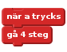
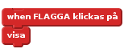
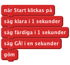
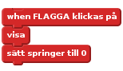
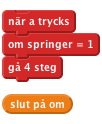
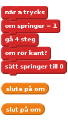
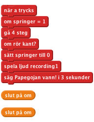
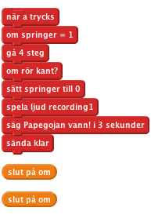
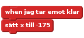
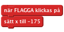

Introduktion
Det här är ett spel för två personer där en papegoja och ett lejon har kapplöpning genom öknen. Varje spelare ska slå på en tangent så fort den kan för att flytta på sitt djur, och den första som når kanten på skärmen vinner.
STEG 1: Skapa scenen och lägg till sprites
Checklista
- Välj Scenen och lägg till ökenbakgrunden (öken heter desert på engelska)
- Lägg till en ny sprite, välj lejonspriten som du hittar i mappen animals.
- Lägg till en sprite till, nu papegojspiten som du också hittar i mappen animals.
STEG 2: Få lejonet och papegojan att röra på sig
Vi vill att spritearna ska röra på sig när du trycker ner en tangent.
Checklista
- Börja med att välja lejonspriten och säg åt den att flytta sig 4 steg när du trycken ner tangenten “L”.
- Välj sen papegojspriten och gör så att den rör sig 4 steg när du trycker på tangenten “A”.

Testa ditt projekt
Klicka på den gröna flaggan
Rör sig ditt lejon och din papegoja över skärmen när du trycker ner A och L?
Spara ditt projekt
STEG 3: Starta racet
Vi behöver ha ett sätt att påbörja racet och att veta vem som har vunnit. Först skapar vi en startknapp.
Checklista
- Lägg till en ny sprite från en fil. Välj knappspriten inuti mappen “things”.
- Redigera klädseln på knappspriten, lägg till texten “Starta” och klicka på OK. Flytta spriten till mitten av scenen.
- Lägg nu till ett script som visar spriten när projektet körs igång:

- Nu vill vi att knappen ska räkna ner från 3 och sen säga “GÅ!”, och sen gömmas när den klickas på. Lägg till ett script som ser ut såhär:

Testa ditt projekt
Klicka på den gröna flaggan.
När du trycken på startknappen, räknar den ner till starten och försvinner sen?
Spara ditt projekt
Vi vill bara att de tävlande ska röra på sig efter att racet har startat och vi vill veta när racet är slut så vi behöver en variabel som kan hålla koll på den informationen.
Checklista
- Lägg till en variabel till alla sprites som du kallar springer. Kryssa ur rutan intill den så att den inte visas på scenen.
- Sätt nu springer till 0 när projektet börjar köras. Ändra i ditt “när FLAGGA klickas på”-script så att det ser ut såhär:

- Nu ska du sätta springer-variabeln till att bli 1 när nedräkningen är klar.
- Sen behöver vi stoppa lejonet och papegojan från att röra sig om inte springer-variabeln är satt till 1. Klicka på papegojspriten. Lägg till ett kontrollblock i scriptet som bara tillåter
papegojan att röra sig om springer = 1.

- Gör nu samma sak för lejonspriten.
Testa ditt projekt
Klicka på den gröna flaggan.
Flyttar sig lejonet och papegojan bara efter att nedräkningen är färdig?
Vi vill veta vem som vinner racet och återställa det när det är slut så att du kan tävla igen.
Step 4: Målgången
- Lägg till ett block i papegojans script som sätter springer-variabeln till 0 när spriten nuddar kanten av skärmen (mål).

- Nu vill vi att papegojan ska säga till om den har vunnit racet. Spela in ett nytt ljud till papegojspriten som spelas upp när papegojan vinner. Klicka på ljud och spela sen in ljudet av papegojan som vinner racet!
- Lägg nu till block som spelar upp ditt inspelade ljud och får papegojan att säga det när den har vunnit:

- Repetera nu samma steg för lejonet.
Testa ditt projekt
Klicka på den gröna flaggan.
Kan du trycka på startknappen och racea genom att trycka på A och L-tangenterna?
Gör spritearna sina vinnarljud och säger att de har vunnit när de når mål (kanten på skärmen)?
Spara ditt projekt
STEG 5: Nollställa spelet
När kapplöpningen är slut behöver vi berätta för de andra spritearna att vi har vunnit och nollställa spelet så att vi kan spela igen.
Vi behöver få vinnarspriten att sända ut att den har vunnit.
Checklista
- Klicka på papegojspriten.
Lägg till ett block som sänder ut “klar” efter att spriten säger att den har vunnit.

- Nu behöver vi lägga till ett script som lyssnar till klar-meddelandet och flyttar tillbaka papegojan till startlinjen. Vad händer om du ändrar värdet för x?

- Lägg nu till samma script för lejonet. Pröva olika x-värden för att se till att lejonet och papegojan båda är på startlinjen.
- Vi vill också att lejonet och papegojan ska vara på samma ställe när projektet körs, så lägg till ännu ett script till båda som flyttar dem till startlinjen
när vi klickar på flaggan.

- Klicka nu på knappspriten och lägg till ett script som visar den när den tar emot klar-meddelandet.
Testa ditt projekt
Klicka på den gröna flaggan.
Kan du tävla mot en kompis genom att en av er slår på A för att flytta papegojan och den andra flyttar lejonet genom att slå på L?
Spara ditt projekt
Utmaning: Lägg till en booster
- Pröva att lägga till en booster som du kan använda en gång för varje race och som flyttar papegojan eller lejonet 30 steg på en gång.
- Lägg till en ny klädsel med eld som sprutar från spriten och få den att visas när boosten används.
- Skapa ett nytt ljud som spriten kan göra när boosten används.
Testa ditt projekt
Spara ditt projekt
Bra jobbat, nu är du klar och kan spela ditt spel!
Glöm inte att du kan dela spelet med dina kompisar och din familj genom att klicka på Dela ut i menyn!